The Activist's Guide to Witty Messaging
So, you've got a cause, a righteous sense of indignation, and a blank piece of poster board staring back at you with terrifying emptiness. Fear not! Crafting a memorable protest message is an art form, and you're about to become a master. Let's break it down.
Step 1: The Core - Know Your "Why" Before Your "What"
Before you can be funny, you have to be clear. Every great joke has a solid premise. Your message is the same. You need to be able to distill your entire complex, nuanced issue into a single, digestible sentence.
- Bad: "I am concerned about the multifaceted geopolitical and socioeconomic factors contributing to suboptimal environmental regulatory frameworks."
- Good: "I like my planet, and I'd prefer not to have it on fire."
Your goal is to have a foundation so simple that even a passing motorist going 45 mph can get the gist. The humor is the decoration you build on this foundation.
Step 2: Choose Your Comedic "Voice"
This is where you inject your personality. What kind of funny are you? Pick a lane and own it.
The Deadpan Understatement
This voice uses extreme politeness and minimalism to highlight the absurdity of the situation. It's the comedy of low expectations.
"This Is Not Optimal.""I Mildly Disapprove of These Events.""Honestly, I'm Not a Fan."
The Absurdist
Connect your cause to something completely unrelated and bizarre. The brain-scrambling nature of it makes people stop and think.
"Less Greed, More Tacos."-
"I've Seen Better Cabinets at IKEA!"(For a political protest) -
"My Goldfish Has A Better Climate Plan."
The Self-Aware Introvert
This voice is relatable. It acknowledges the personal sacrifice of, you know, being outside and interacting with people.
-
"An Introvert's Worst Nightmare... That's How Important This Is." -
"I Could Be Watching TV Right Now."
Using a well-known meme, movie quote, or song lyric is a shortcut to connection. A sign that says
"This is NOT the way" with a picture of The
Mandalorian instantly communicates disappointment to a huge
audience.
Step 3: The K.I.S.S. Principle (Keep It Simple, Sign-holder!)
Now that you have your core message and your voice, it's time to write. Remember these rules:
- Brevity is Key: Aim for 10 words or fewer. Treat your sign like a tweet from 2010.
- Legibility Matters: Use big, fat, block letters. No one can appreciate your wit if it's written in an illegible cursive font. Illegible rage is just a font-based tragedy.
- Contrast is Everything: Black marker on a white board. Don't use a yellow marker on a white board unless you're protesting visibility itself.
Step 4: The Final Polish - Read It Aloud
Does it have a good rhythm? Is it easy to chant? Does it make your friend who proofreads everything chuckle? Say it out loud. Yell it in your living room. If it feels clunky coming out of your mouth, it'll be clunky on the street.
Congratulations! You've moved beyond a simple sign and created a piece of performative, portable art. You've crafted a message that is informative, entertaining, and ready to make a difference
Now go forth and be respectfully rowdy.
Check out some funny signs below!
 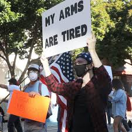
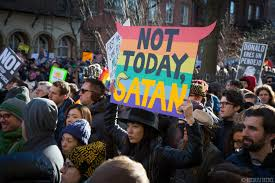
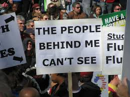
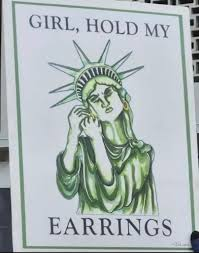
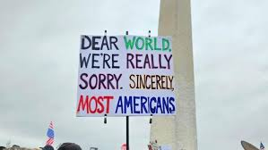
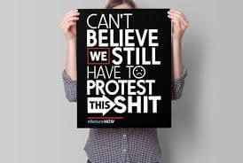
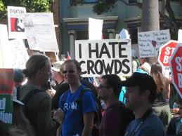
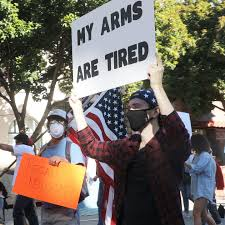
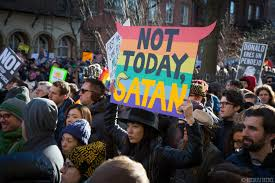
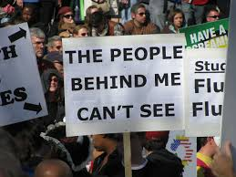
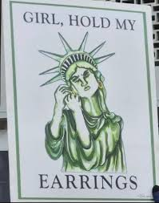
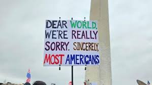
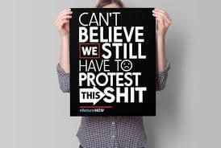
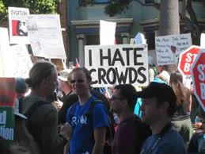